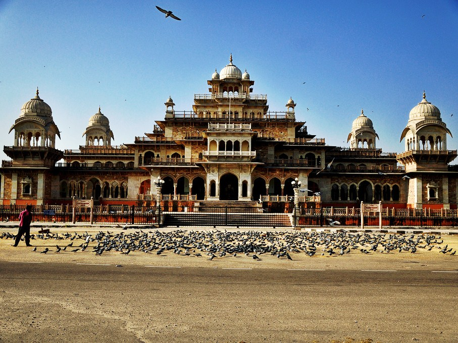
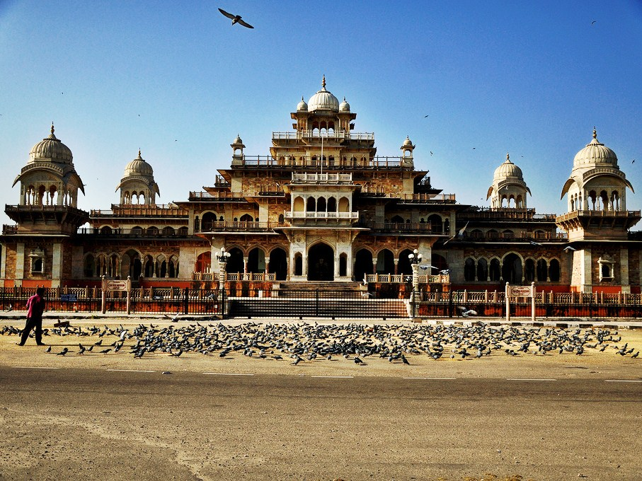

AMER FORT

-Constructed of red sandstone and marble,consists of the Diwan-i-Aam, or "Hall of Public Audience", the Diwan-i-Khas, or "Hall of Private Audience", the Sheesh Mahal, or Jai Mandir, and the Sukh Niwas
CITY PALACE
 

–City Palace, Jaipur, which includes the Chandra Mahal and Mubarak Mahal palaces and other buildings, is a palace complex in Jaipur, the capital of the Rajasthan state, India..
NAHARGARH FORT
– Nahargarh Fort stands on the edge of the Aravalli Hills, overlooking the city of Jaipur in the Indian state of Rajasthan. Along with Amer Fort and Jaigarh Fort, Nahargarh once formed a strong defense ring for the city.
HAWA MAHAL


- Hawa Mahal (English translation: "Palace of Winds" or "Palace of the Breeze") is a palace in Jaipur, India. It is constructed of red and pink sandstone..
JAL MAHAL


Jal Mahal (meaning "Water Palace") is a palace in the middle of the Man Sagar Lake in Jaipur city, the capital of the state of Rajasthan, India..
ALBERT HALL MUSEUM


The Albert Hall Museum is a museum in Jaipur in Rajasthan, India. It is the oldest museum of the state and functions as the State museum of Rajasthan